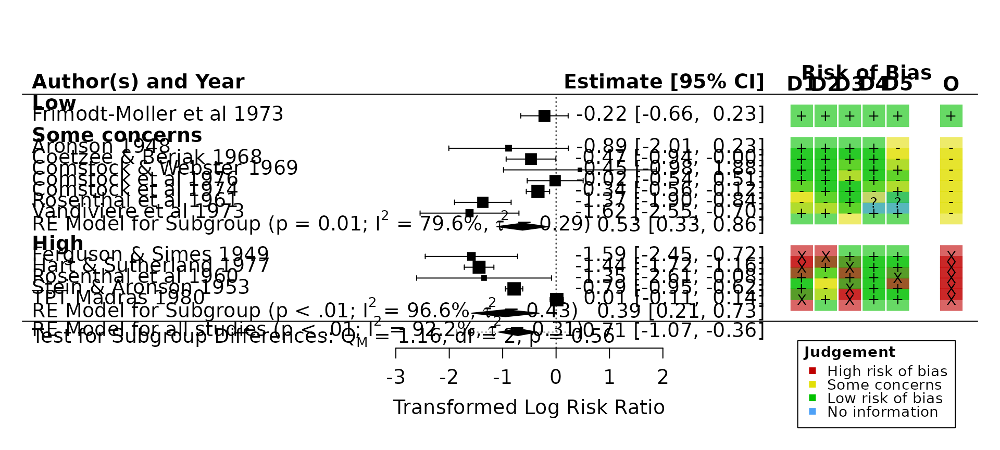

robvis now provides some functionality to work with the results of meta-analyses performed using the metafor package.
First let’s load the relevant packages and define our datasets:
library(robvis)
library(metafor)
library(dplyr)
# Define your studies, using the BCG dataset included in the metadat package
dat_bcg <- metadat::dat.bcg
glimpse(dat_bcg)
#> Rows: 13
#> Columns: 9
#> $ trial <int> 1, 2, 3, 4, 5, 6, 7, 8, 9, 10, 11, 12, 13
#> $ author <chr> "Aronson", "Ferguson & Simes", "Rosenthal et al", "Hart & Suthe…
#> $ year <int> 1948, 1949, 1960, 1977, 1973, 1953, 1973, 1980, 1968, 1961, 197…
#> $ tpos <int> 4, 6, 3, 62, 33, 180, 8, 505, 29, 17, 186, 5, 27
#> $ tneg <int> 119, 300, 228, 13536, 5036, 1361, 2537, 87886, 7470, 1699, 5044…
#> $ cpos <int> 11, 29, 11, 248, 47, 372, 10, 499, 45, 65, 141, 3, 29
#> $ cneg <int> 128, 274, 209, 12619, 5761, 1079, 619, 87892, 7232, 1600, 27197…
#> $ ablat <int> 44, 55, 42, 52, 13, 44, 19, 13, 27, 42, 18, 33, 33
#> $ alloc <chr> "random", "random", "random", "random", "alternate", "alternate…
# Create some example data for ROB2 using rob_dummy(), and add it to the BCG
# data.
# We don't need a "Study" column for this example, so we set `study = FALSE`
dat_rob <- rob_dummy(13,
"ROB2",
study = FALSE)
dat_analysis <- cbind(dat_bcg, dat_rob)
glimpse(dat_analysis)
#> Rows: 13
#> Columns: 15
#> $ trial <int> 1, 2, 3, 4, 5, 6, 7, 8, 9, 10, 11, 12, 13
#> $ author <chr> "Aronson", "Ferguson & Simes", "Rosenthal et al", "Hart & Suth…
#> $ year <int> 1948, 1949, 1960, 1977, 1973, 1953, 1973, 1980, 1968, 1961, 19…
#> $ tpos <int> 4, 6, 3, 62, 33, 180, 8, 505, 29, 17, 186, 5, 27
#> $ tneg <int> 119, 300, 228, 13536, 5036, 1361, 2537, 87886, 7470, 1699, 504…
#> $ cpos <int> 11, 29, 11, 248, 47, 372, 10, 499, 45, 65, 141, 3, 29
#> $ cneg <int> 128, 274, 209, 12619, 5761, 1079, 619, 87892, 7232, 1600, 2719…
#> $ ablat <int> 44, 55, 42, 52, 13, 44, 19, 13, 27, 42, 18, 33, 33
#> $ alloc <chr> "random", "random", "random", "random", "alternate", "alternat…
#> $ D1 <chr> "Low", "Low", "High", "Low", "Low", "No information", "Low", "…
#> $ D2 <chr> "Low", "Low", "Low", "Low", "Low", "High", "Some concerns", "S…
#> $ D3 <chr> "Low", "Low", "Low", "Some concerns", "Low", "Low", "No inform…
#> $ D4 <chr> "Low", "Low", "Low", "Low", "High", "Low", "High", "Low", "Som…
#> $ D5 <chr> "Low", "Low", "High", "Some concerns", "Low", "High", "Low", "…
#> $ Overall <chr> "Low", "Low", "High", "Some concerns", "High", "High", "High",…Now each row in the dataset contains a single numerical result and it’s corresponding risk-of-bias assessment.
Let’s now perform a simple random-effects meta-analysis using metafor::rma():
# Calculate effect estimates and sampling variances for each study
dat_analysis <-
metafor::escalc(
measure = "RR",
ai = tpos,
bi = tneg,
ci = cpos,
di = cneg,
data = dat_analysis
)
# Perform the meta-analysis
res <- metafor::rma(yi,
vi,
data = dat_analysis,
slab = paste(author, year))
# Explore the results
res
#>
#> Random-Effects Model (k = 13; tau^2 estimator: REML)
#>
#> tau^2 (estimated amount of total heterogeneity): 0.3132 (SE = 0.1664)
#> tau (square root of estimated tau^2 value): 0.5597
#> I^2 (total heterogeneity / total variability): 92.22%
#> H^2 (total variability / sampling variability): 12.86
#>
#> Test for Heterogeneity:
#> Q(df = 12) = 152.2330, p-val < .0001
#>
#> Model Results:
#>
#> estimate se zval pval ci.lb ci.ub
#> -0.7145 0.1798 -3.9744 <.0001 -1.0669 -0.3622 ***
#>
#> ---
#> Signif. codes: 0 '***' 0.001 '**' 0.01 '*' 0.05 '.' 0.1 ' ' 1Having performed the meta-analysis, you can now append a risk-of-bias traffic-light plot onto the standard output from metafor::forest() by simply passing the results object (res) to rob_forest():
rob_forest(res, rob_tool = "ROB2")
This function is designed to make it as easy as possible to substitute rob_forest() for metafor::forest().